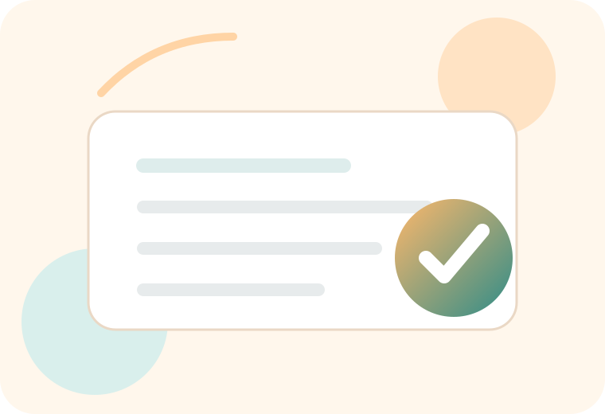

Checklist intelligente • 100% local
Avant de signer, acheter ou envoyer : vérifiez l’essentiel.
Choisissez une situation. NYXA vous indique les vérifications à faire dans le bon ordre, les signaux qui doivent vous arrêter et les liens utiles. Pas de jargon.

Que souhaitez-vous faire ?
Commencez par la situation la plus proche. Vous pouvez changer à tout moment.